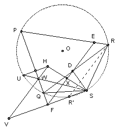
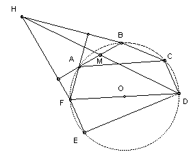

If S is a point on the circumcircle of the triangle PQR, show that the feet of the perpendiculars from S to the lines PQ, QR, RP are collinear. Denote the line by [S, PQR]. If ABCDEF is a hexagon whose vertices lie on a circle, show that the lines [A, BDF], [B, ACE], [D, ABF], [E, ABC] are concurrent iff CDEF is a rectangle.
Solution

The fact that the feet of the perpendiculars are collinear is well-known (the line is known as the Simson line after Robert Simson 1687-1768, although the result seems to have been first proved by William Wallace in 1797). Label the feet of the perpendiculars D, E, F as shown (D on QR etc).
The proof is straightforward. ∠QSR = 180o - P (S lies on circumcircle) = angle ESF (SEPF cyclic). Subtracting angle FSR, we get ∠QSF = ∠RSE. But SDRE is cyclic, so ∠RSE = ∠RDE, and QFDS is cyclic, so ∠QSF = ∠QDF. Hence ∠RDE = ∠QDF. Hence EDF is a straight line.
Next we show that [S, PQR] passes through X, the midpoint of HS, where H is the orthocenter of PQR. This is also a well-known result.
Let the altitude from R meet the circumcircle again at U. Let SU meet PQ at W and let the lines HW and SF meet at V. Then PQ bisects HU (that is a well-known result, easily proved, ∠QPU = ∠QRU = 90o - Q = ∠QPH, so U is the reflection of H in PQ). Both HU and SV are perpendicular to PQ, so F is the midpoint of SV. Let SV meet the circle again at R'. Then ∠SR'R = ∠SUR (circumcircle) = ∠WUH (same angle) = ∠WHU (U reflection of H) = ∠HVS (HU parallel to SV). So HV is parallel to RR'.
∠SR'R = ∠SQR (circumcircle) = ∠SQD (same angle) = ∠SFD (cyclic). So RR' is parallel to the Simson line (that is also a well-known result). Hence HV is parallel to XF. But F is the midpoint of SV, so X is the midpoint of HS.

Suppose CDEF is a rectangle. Let M be the midpoint of AB. We show that the four lines [A, BDF], [B, ACE], [D, ABF], [E, ABC] all pass through M. Since CE is a diameter, the orthocenter of ACE is A, so [B, ACE] passes through M. Similarly, DF is a diameter, so the orthocenter of BDF is B, and [A, BDF] passes through M.
Let H be the orthocenter of ABF. Since DF is a diameter, BD is perpendicular to BF. But AH is perpendicular to BF, so BD and AH are parallel. Similarly, AD and BH are both perpendicular to AF and hence parallel. So BDAH is a parallelogram, so M is the midpoint of DH. Hence [D, ABF] passes through M. Similarly, [E, ABC] passes through M.
The converse seems to be most easily proved using vectors. Going back to the first diagram, take vectors with origin at O. Write the vector OP as p etc. The H is p + q + r (because then PH is q + r, RQ is (q - r), and (q + r).(q - r) = q2 - r2 = 0). So the point X is ½(p + q + r + s). Thus for the hexagon, we have that [A, BDF] and [D, ABF] intersect at ½ (a + b + d + f), and [B, ACE] and [E, ABC] intersect at ½(a + b + c + e). So the lines are concurrent iff d + f = c + e or c - d = f - e. In other words the lines are concurrent iff CDEF is a parallelogram. But any parallelogram inscribed in a circle must be a rectangle.
Comment. To get started on this, you have to be familiar with the properties of the Simson line.

© John Scholes
jscholes@kalva.demon.co.uk
1 Jan 2003
Last corrected/updated 1 Jan 03